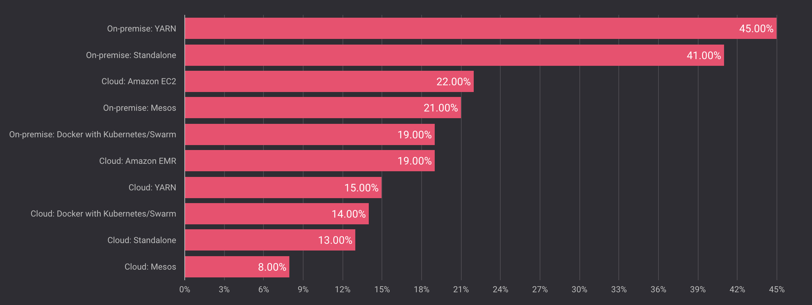
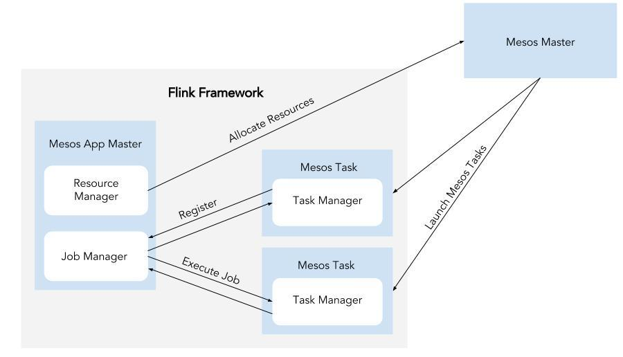

Last December, data Artisans organized the first-ever Apache Flink® user survey. We asked the community where they were running Flink, and here’s what we found:

Just under 30% of respondents were running Flink on Apache Mesos (on-premise or in the cloud). Notably, Flink hadn’t even provided official support for Mesos until this month’s Flink 1.2 release. This 30% is a testament to Mesos’ popularity.
It comes as no surprise, then, that demand for Mesos support was on the rise in the Flink community and showed up as a common feature request in the Flink user survey:
“Excited for the upcoming Mesos integration.”
“Full support for Mesos”
“Support to run on Mesos”
Apache Flink® 1.2 includes many improvements to Flink deployment modes, and one such improvement is support for Apache Mesos and DC/OS (datacenter operating system, the open-source Mesos distribution and application management layer provided by Mesosphere) as first-class citizens.
Here at data Artisans, we have seen seen a wide range of production Flink deployments, so we appreciate how quickly the resource manager space is evolving and how Flink, too, must evolve—especially as Flink supports a broader variety of use cases. A tighter integration with Mesos and DC/OS represents an important step forward in Flink’s capabilities.
In this post, we’ll give a high-level overview of deploying Flink on both Mesos and DC/OS. Be sure to refer to the complete documentation before starting this process yourself.
Flink’s interaction with Mesos
For the uninitiated: Flink is a stateful stream processing framework that supports high-throughput, low-latency applications. Flink is a lightweight and fault tolerant, providing strict accuracy guarantees in case of failures, with minimal impact on performance. Flink deployments cover a range of use cases; Alibaba, for example, uses Flink to optimize search results in real-time.
Flink’s Mesos and DC/OS implementation in 1.2 consists of an Application Master, which runs the JobManager and the ResourceManager.
The ResourceManager hosts the Mesos scheduler communicating with the Mesos cluster and allocating resources for Mesos tasks, which run Flink’s TaskManagers.

Flink on DC/OS
In its Mesos user survey, Mesosphere found that 87% of new Mesos users are running DC/OS, and so Flink’s Mesos support wouldn’t be complete without DC/OS support, too. To run Flink on DC/OS, first install DC/OS from the official site.
Note that DC/OS includes Mesos, Marathon (a service that will supervise your applications and maintain their state in case of failures), and ZooKeeper, all pre-configured out of the box.
Once your DC/OS cluster is ready, you can simply search for “Flink” in Universe, install the package with a couple of clicks, and you’re ready to get started. If you’d like to use Flink’s checkpoints for fault tolerance (recommended for most production deployments), you’ll also need to install HDFS.
We’d like to extend a big thanks to our friends at Mesosphere for their contribution to DC/OS support, enabling a seamless integration between Flink and DC/OS.
Flink on Mesos
First things first: the Mesos documentation will walk you through initial Mesos setup. Next you should also install Marathon, since you usually want your cluster to be highly available (HA). In order to run Marathon, you also need a ZooKeeper quorum running. We assume for the following that ZooKeeper is reachable under node:2181. Lastly, we recommend installing a distributed file system where Flink can store its checkpoints. We assume for the following that HDFS is installed and can be reached via hdfs://node/.
After installing Mesos and Co. we have to enable Flink’s HA functionality by adding the following lines to Flink’s configuration file:
high-availability: zookeeper
high-availability.zookeeper.quorum: node:2181
high-availability.zookeeper.storageDir: hdfs://node/flink/ha
recovery.zookeeper.path.mesos-workers: /mesos-workers
Last but not least, we have to start Flink as a Marathon application by giving the following JSON application description to Marathon:
{
"id": "flink",
"cmd": "$FLINK/bin/mesos-appmaster.sh -Dmesos.master=node:5050 -Dmesos.initial-tasks=1",
"cpus": 1.0,
"mem": 1024
}
Congratulations. You now have a highly-available Flink cluster running on Mesos!
Looking Ahead
The Flink community is actively working on improvements beyond the 1.2 release, and will add two key components in the near future.
Dynamic resource allocation: In Flink 1.2, it’s not possible to dynamically adjust the number of tasks allocated to a job running on Mesos. FLIP-6 will address this issue by separating the concerns of all deployment components. A dispatcher component will receive jobs and spawn Flink clusters, and the new ResourceManager will dynamically allocate new tasks if more resources are needed.
Integration with the Flink CLI: In the future, it will be possible to start a Mesos cluster per job using the Flink CLI. Right now, a user must first start a Flink cluster on Mesos and then submit a long-running cluster session.
We believe that the Flink community’s work in partnership with Mesosphere will enable a broader range of Flink deployments, and we look forward to hearing user feedback about this new integration. Please contact the Apache Flink user mailing list if you have comments or questions.